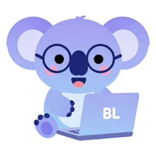
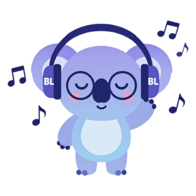
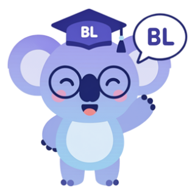
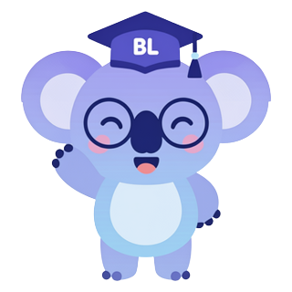
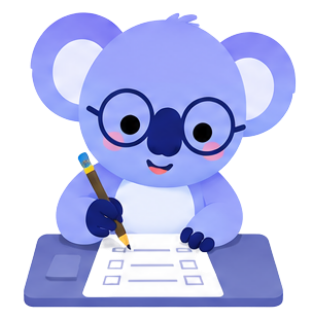
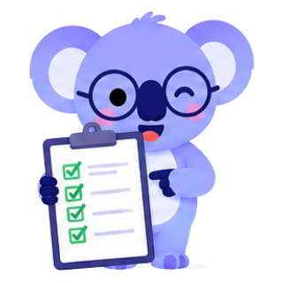

Tu plataforma de práctica CELPIP
Practica las 4 habilidades con tareas originales en formato real. Reading y Listening se corrigen al instante; tus respuestas de Writing y Speaking llegan a tu coach para que las califique.

🎯 Practica por habilidad

Listening
Corrección automáticaPractice Task + Partes 1–6 con audio real, se escucha una sola vez. Tu puntaje se guarda para tu coach.
Reading
Corrección automáticaPractice Task + Partes 1–4 con cronómetro. Tu puntaje se guarda para tu coach.
Writing
Lo corrige tu coachEmail y encuesta, 150–200 palabras. Envías tu texto y se guarda como Google Doc.

Speaking
Lo corrige tu coach8 tareas con tiempos reales. Te grabas aquí mismo y envías el audio a Google Drive.
🧭 Empieza aquí

Todo sobre el CELPIP
Versiones, formato, puntajes y requisitos para Canadá y Australia.
Onboarding
Diagnóstico, metas SMART, hábitos y tu plan de estudio en 3 pasos.

Study Notebook
Tu registro diario de errores, vocabulario, frases y simulacros.

Mis resultados
Tus puntajes, el nivel que te da tu coach y sus comentarios.
¿Cómo funciona la corrección?
- Entra con tu código de claseTu coach te da el código. Solo lo haces una vez por dispositivo.
- Practica con tiempo realReading y Listening se corrigen al instante. En Writing y Speaking tocas «Enviar a mi coach».
- Tu coach te calificaTus textos y audios se guardan en su Google Drive. Te da un nivel CLB y comentarios.
- Revisa y mejoraEn «Mis resultados» ves tu nivel por habilidad y lo que debes trabajar.
@bilingualearn.au · Bilingualearn · Coaching CELPIP, PTE e IELTS